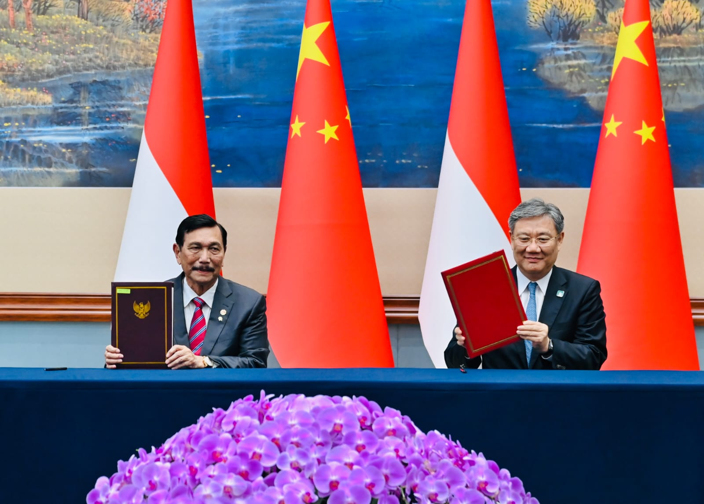

.png)

Kerjasama: Indonesia-China Berkeinginan Tingkatkan Hubungan Islam (Rabu, 21 Juli 2010)
Tujuan: Mempererat hubungan Islam di China dengan bantuan Indonesia
Kasus: Pemerintah Indonesia dan China sepakat berkeinginan meningkatkan hubungan Islam yang telah berjalan dengan baik dengan saling meningkatkan hubungan sosial dan budaya kedua negara. Dikatakan oleh Menteri Agama Suryadhama Ali bahwa dengan adanya kehadiran utusan muslim China ke Indonesia diharapkan bahwa hubungan Islam kedua negara tersebut akan meningkat dimana hal tersebut dikemukakan oleh ia mendampingi Wapres Boediono yang bertemu dengan Menteri Urusan Administrasi Agama Republik Rakyat China Wang Zuo An dan Presiden Asosiasi China Islam Gu Zuo Xuan. hubungan Islam kedua negara ini sudah berjalan dengan baik karena adanya kunjungan delegasi China tersebut diharapkan bisa meningkat lagi. Dalam pertemuan ini, Wang Zuo An mengatakan bahwa kunjungan delegasi ke Indonesia merupakan undangan resmi dari Kementrian Agama RI dan sebagai wujud hubungan diplomatik kedua negara ini, menurutnya tujuan utama delegasi China ke Indonesia adalah untuk meningkatkan hubungan umat beragama, khususnya beragama Islam, serta untuk mempererat masyarakat kedua negara. Indonesia sebagai negara yang mayoritas penduduknya beragama Islam menjadi mitra utama untuk meningkatkan dan mempererat persahabatan kedua negara tersebut khususnya bagi umat Islam. Selama kunjungannya ke Indonesia, delegasi Islam China tersebut juga akan bertemu dengan sejumlah ormas Islam di Indonesia seperti Muhammadiyah, NU, serta MUI, selain itu juga akan memamerkan kekayaan seni dan budaya Islam China di Balai Kartini, Jakarta, pada 23-28 Juli pada tahun 2010 kemarin dimana akan ditampilkan sejumlah kaligrafi, foto kehidupan umat Islam di China, serta tari-tarian. Kehidupan kaum Islam di China berjalan dengan baik dan diberikan perhatian bagi daerah Otonomi Khusus Xinjiang, yang penduduknya mayoritas Islam.